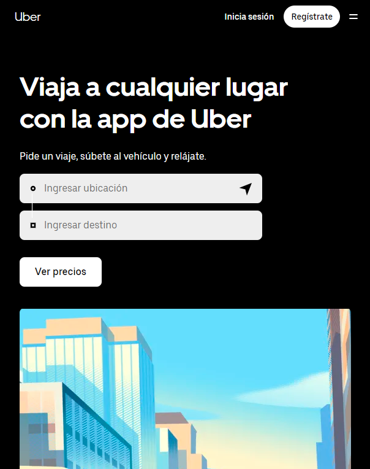
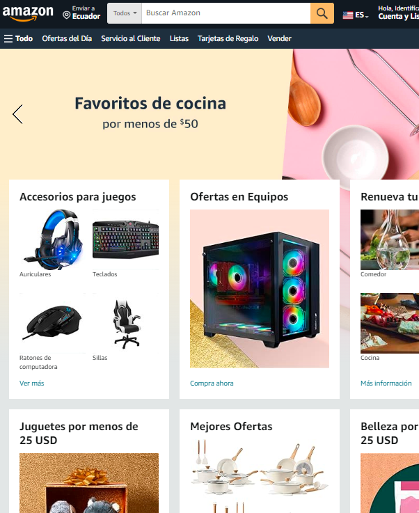

Contrast
Uber
uber.com Uber's website effectively utilizes the design principle of contrast to highlight important elements and create a visually appealing interface. The contrast is evident in the color scheme, with a predominantly dark background contrasting against bright and vibrant elements, such as call-to-action buttons and promotional banners. This stark contrast not only enhances the readability of text but also directs the user's attention to key features and information.
Hick's Law
Google's homepage is a prime example of Hick's Law, which states that the time it takes for a person to make a decision increases with the number of choices available. Google's minimalist design reflects this principle by presenting users with a clean and straightforward interface. The focal point is the search bar, and there are minimal distractions.
Proximity
Amazon
amazon.com Amazon's website demonstrates the principle of proximity by organizing related elements and content in close proximity to each other.